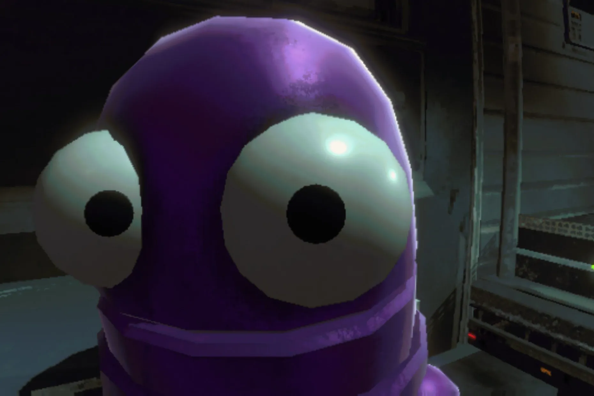

Summary
นายภวดล มากสรอย (ตัง) อายุ 20ปี
เกิดวันที่ 18 ตุลาคม พ.ศ.2547
สาขาวิทยาการคอมพิวเตอร์
Education
จบการศึกษาระดับมัธยมศึกษาจาก โรงเรียนราชโบริกานุเคราะห์
วันที่ 31 เมษายน พ.ศ.2566
กำลังศึกษาระดับปริญาตรีที่ มหาวิทยาลัยเทคโนโลยีราชมงคลกรุงเทพ
Work experience
Skills
เขียนโค้ดภาษา java html css
Awards
-
Contact Me
My Hobbies